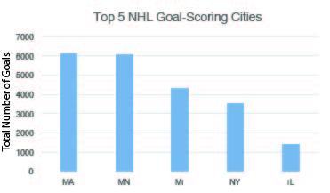
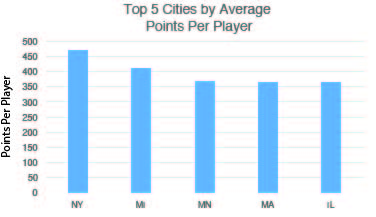

Want your kid to be an NHL pro? Raise him as close to Montreal, Québec as possible.
Canada is known for a great many things: maple syrup,fantastically well-mannered locals, and, of course, ice hockey. You would think Canadian babies slide out of the womb onto a frozen lake to start practicing their slapshots before they can even walk. NHL greats like Wayne Gretzky, Mario Lemieux, and Sydney Crosby all hail from America's Hat. This may explain why the overwhleming majority of the best US-born NHL players happen to have been born and raised right next to our northern neighbors. According to QuantHockey's list of the all-time top NHL scorers from the United States, the states producing the most talented NHL players are the states closest to Québec and Ontario. Canada is literally oozing talent down to the United States. The biggest beneficiaries of this effect are Minnesota, Michigan, and Massachusetts, who combine to account for 114 of the top 200 US-born NHL players. The rest of the 200 players are scarcely spread across the United States, with a particular concentration in the northeast corner of the country. This area happens to sit right under Hockey Central, aka Montreal, Québec.
As far as goal scoring goes, Massachusetts, Minnesota, Michigan, New York, and Illinois have contributed the twine-seeking missles launched by players from the United States. Massachusetts leads the pack with 6,127 goals, followed by Minnesota (6,068), Michigan (4,330), New York (3,556), and Illinois (1,431). Massachusetts' goal-scoring finesse have produced player like Jeremy Roenick (513 goals) and Keith Tkachuk (538 goals) who have combined for over 1,000 goals between the two of them alone. Michigan's Mike Modano leads US players with 561 goals. Despite being so young and having some of the least number of games played by hundreds, New York's Patrick Kane has already banked 259 goals to help solidify himself as the 25th highest scoring US player.
The rankings slightly shift when looking at overall points scored between goals and assists. Minnesota leads all states with 17,305 points tallied, followed by Massachusetts (14,325), Michigan (11,538), New York (8,488), and Illinois (3,296). These rankings essentially adhere to the number of players each state has in the NHL, meaning the state with more players had the most points.  But if the data is broken down by the average points per player, the rankings transform prety dramatically. New York suddenly tops the list, due to its 18 players proficciently averaging 471 points. Michigan follows with an average of 412 points from its 28 players. Minnesota (368avg, 47 players), Massachusetts (367avg, 39 players), and Illinois (366avg, 9players) remains in fifth. Michigan's Mike Modano once again tops the list, with 1,374 points (561g, 813a). Despite not appearing in the top 5 states, one of Texas' two representatives, defenseman Brian Leetch, ranks 7th all-time in points with 1,028 points (247g, 781a). There are plenty of outlier players like Brian Leetch that are born around the ice-less southwest yet still develop a knack for scoring. But if you believe in the accuracy of statistics, it would be a good move to raise your young hocey prodigey close to our Canadian cousins in Massachusetts.